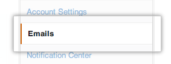
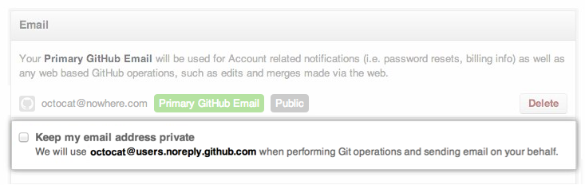

Every Git commit identifies you with an email address. GitHub does not get many reports of spam being sent to the email addresses in Git commits, but if you are worried about it or have other privacy concerns you can always use a private GitHub address instead:
username@users.noreply.github.com
Step 1: Tell GitHub to keep your email address private
To use the email address <username>@users.noreply.github.com for all operations supported by GitHub Flow in the browser:
In the left sidebar, click Emails. 
Select Keep my email address private. 
Step 2: Tell Git to use your private email address
If you are using a command-line or desktop Git application to commit data locally, you will also need to update your local Git configuration.
To use your private email address for every repository on your computer:
Open a command-line prompt.
-
Set your email address with the following command.
git config --global user.email "username@users.noreply.github.com" -
Confirm that you have set your email address correctly with the following command.
git config --global user.email # username@users.noreply.github.com
To use your private email address for a single repository:
Navigate to your repository from a command-line prompt.
-
Set your email address with the following command.
git config user.email "username@users.noreply.github.com" -
Confirm that you have set your email address correctly with the following command.
git config user.email # username@users.noreply.github.com
Troubleshooting
Commits on GitHub aren't linking to my account
If you're using a command-line or desktop Git application, make sure that you have entered your private GitHub address (<username>@users.noreply.github.com) correctly. Next, make sure that you have followed the instructions above and selected Keep my email address private in your [email settings][email settings]. You need to select this checkbox at least once before GitHub will associate commits using email addresses @users.noreply.github.com with your account.
New commits aren't using the right email
If git config user.email reports the correct email address for the repository you're viewing, but your commits are using the wrong email address, your environment variables may be overriding your email address.
Make sure you have not set the GIT_COMMITTER_EMAIL or GIT_AUTHOR_EMAIL variables. You can check their values with the following command:
echo $GIT_COMMITTER_EMAIL # prints the value of GIT_COMMITTER_EMAIL echo $GIT_AUTHOR_NAME # prints the value of GIT_AUTHOR_EMAIL
If you notice a different value, you can change it like so:
GIT_COMMITTER_EMAIL=username@users.noreply.github.com GIT_AUTHOR_EMAIL=username@users.noreply.github.com
My old commits still have my old email address
Changing your email address in Git only affects commits that you make after your change.
To rewrite your old commits, you can use git filter-branch to change the repository history to use your new email address.
Warning: If you're collaborating on a repository with others, it's considered bad practice to rewrite published history. You should only do this in an emergency.
Further reading
- "Git Configuration" from the Pro Git book